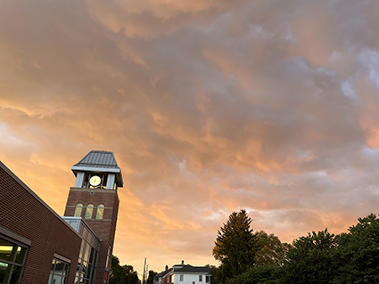
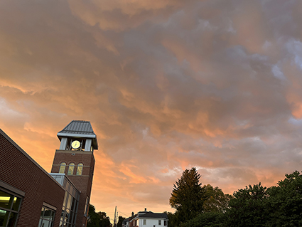
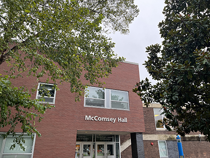
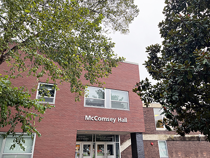
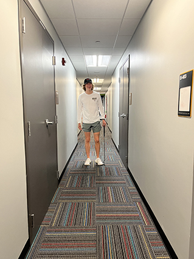
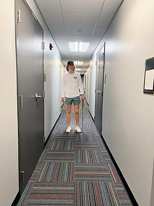
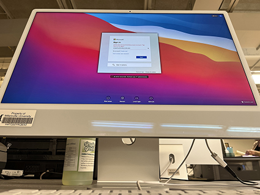
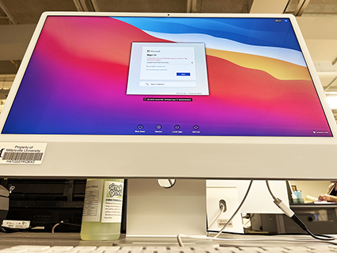

Digital Photography Project |
|||
|
For this project, I was required to take photos using compostion skills learned in class. Afterwards, I was required to edit the photos, document my changes, and then compile them in an Adobe InDesign file. Below you will find the orignal photo on the left and the edited version on the right, along with compostion or editing notes. |
|||
| Original Photo | Edited Photo | ||
|---|---|---|---|
|  I captured this image of the Student Memorial Center about 120 feet away from the tower. I attempted to use rule of thirds to split this image by having the tower on one side, and the trees on the other, with the street splitting the image. This image was taken during golden hour with no flash, and so the building appears more orange than how it was in reality. |  To compensate for the orange appearance, I lowered the brightness down by 20 units. I also used auto contrast to bring out the various colors in the sky. The main focus of this image is the sky, so making it look as best as possible was my main concern. | ||
|  This photo was taken about 20 feet away from McComsey Hall. It was taken early in the morning and the skies were gray. The flash was not on, nor were my camera’s low light settings. I attempted to use the trees to frame McComsey Hall. |  In order to focus the building more, I turned the contrast up 10. This added definition to the bricks. I also used the clone stamp tool to remove the blue pole on the right. I increased the brightness by 30 to brighten the photo since it was taken early in the morning. Lastly, I used the auto tone, contrast, and color features. | ||
|  This photo was taken in the hallway of my dorm. My roommate, Gabe, is the focus of the picture. He is standing about 10 feet away from the camera. I attempted to use leading lines in this picture to lead the viewer to him. |  First, I rotated the photo slightly because it was tilted when taken. Next, I used auto tone, contrast, and color. I turned up the contrast by 10 as well. Lastly, I used the clone stamp tool to edit out the room number on the sign. My goal was to take out the warmth of the lighting in the original photo because it did not properly reflect the LED lighting in the hall. | ||
|  This picture was taken in Osburn Hall in room 304. I was about 8 inches away from the computer when I shot this photo. I used the worm’s eye perspective to try to give a different angle of the computer than humans are used to. There was medium lighting when this picture was taken. Some lights were on in the room. I did not use flash or low light settings when taking this picture. |  The first thing I did was I increased the brightness by 41 to brighten up the computer. Next, I raised the contrast by 20. This really brought the computer out from the dark background. Then, I used the clone stamp tool to remove the reflection of the LED lights behind the camera onto the bezels of the computer. Lastly, I used the auto tone and contrast features. | ||
link to pdf version |
|||
|
© 2023 Andrew Gephart |
|||